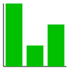
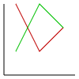

| 命令 | 英語表記 | 補足 |
|---|---|---|
| 描画領域開く(《幅》,《高さ》) | gOpenWindow | 1つしか開けない |
| 描画領域閉じる() | gCloseWindow | |
| 描画領域全消去() | gClearWindow | |
| 線色設定(《赤》,《緑》,《青》) | gSetLineColor | 各色の数は0〜255 |
| 塗色設定(《赤》,《緑》,《青》) | gSetFillColor | |
| 文字色設定(《赤》,《緑》,《青》) | gSetTextColor | |
| 線太さ設定(《太さ》) | gSetLineWidth | |
| 文字サイズ設定(《サイズ》) | gSetTextSize | |
| 文字描画(《文字列》,《x》,《y》) | gDrawText | (x,y)は文字列の左下の座標 |
| 点描画(《x》,《y》) | gDrawPoint | |
| 線描画(《x1》,《y1》,《x2》,《y2》) | gDrawLine | |
| 矩形描画(《x》,《y》,《幅》,《高さ》) | gDrawBox | (x,y)は矩形の左上の座標 |
| 矩形塗描画(《x》,《y》,《幅》,《高さ》) | gFillBox | |
| 円描画(《x》,《y》,《半径》) | gDrawCircle | (x,y)は中心の座標 |
| 円塗描画(《x》,《y》,《半径》) | gFillCircle | |
| 楕円描画(《x》,《y》,《幅》,《高さ》) | gDrawOval | (x,y)は楕円に外接する長方形の左上の座標 |
| 楕円塗描画(《x》,《y》,《幅》,《高さ》) | gFillOval | |
| 弧描画(《x》,《y》,《幅》,《高さ》,《開始角》,《終了角》,《閉じ方》) | gDrawArc | (x,y)は楕円に外接する長方形の左上の座標 角度の単位は度 閉じ方は0:閉じない，1:弦，2:半径 |
| 弧塗描画(《x》,《y》,《幅》,《高さ》,《開始角》,《終了角》,《閉じ方》) | gFillArc | |
| 棒グラフ描画(《幅》,《高さ》,《値のリスト》) | gBarplot | 棒グラフ描画(100,100,[30,10,20])→  |
| 線グラフ描画(《幅》,《高さ》,《値のリスト》) | gLineplot | 線グラフ描画(100,100,[[30,10,20],[10,30,20]])→  |
棒グラフ描画，線グラフ描画の《値のリスト》は《値のリストのリスト》でも良い。